Использование пользовательских нормалей
Редактируя нормали геометрии, мы можем добиться различных эффектов и даже сохранить канал карты нормалей, который позже можно будет использовать для чего-то другого.
По сути, мы хотим имитировать закругленные края, корректируя нормали без использования карты нормалей.
В реальной жизни архитектурные и искусственные объекты, такие как здания, коробки и механические устройства, имеют твердые края и плоские поверхности. Пожалуйста, посмотрите на изображение ниже, где изображен пьедестал.
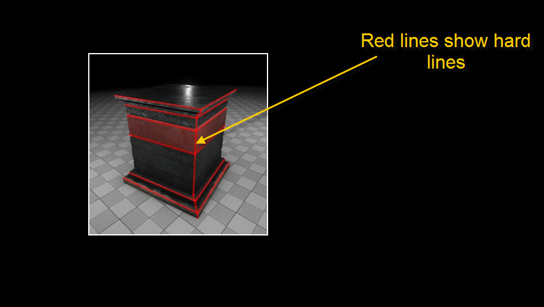
На изображении ниже у нас есть низкополигональный блок, к которому применена карта нормалей, на которой были визуализированы скошенные края из высокополигонального блока.
Этот блок можно было бы создать вообще без использования карты нормалей, без каких-либо визуальных отличий.
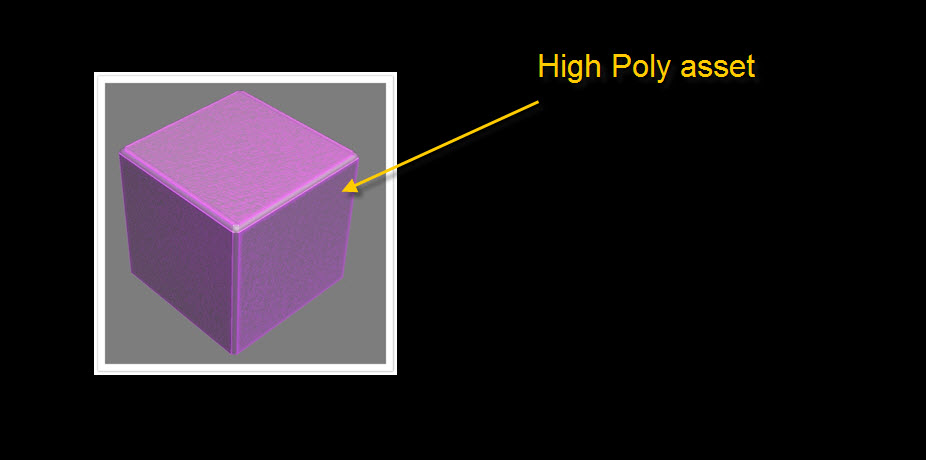
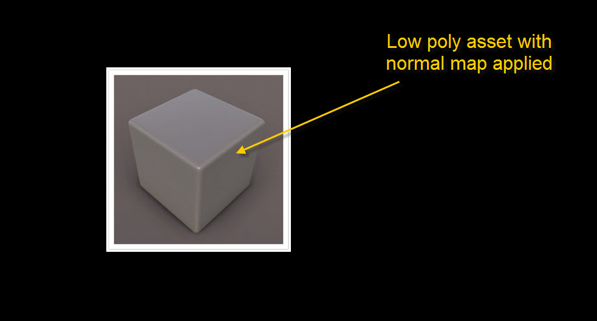
Для этого нам нужно создать коробку, а затем срезать ее края.
У прямоугольника четкие края, а углы не выглядят закругленными, поскольку нормали вершин еще не редактируются.
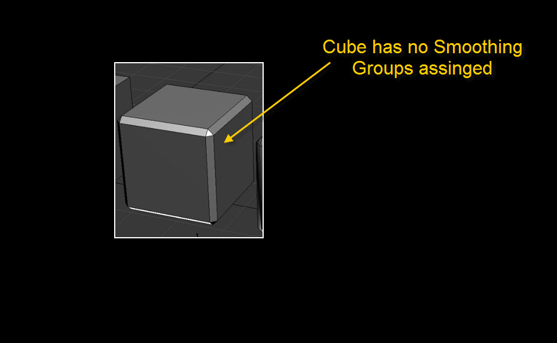
Чтобы сгладить все углы, мы назначаем одну группу сглаживания всему объекту.
Во время этого процесса все нормали сливаются вместе и дают нам очень плавную штриховку, но это не тот результат, который нам нужен, поскольку вы можете видеть, что плоские области отображают плавный градиент, а не плоские.
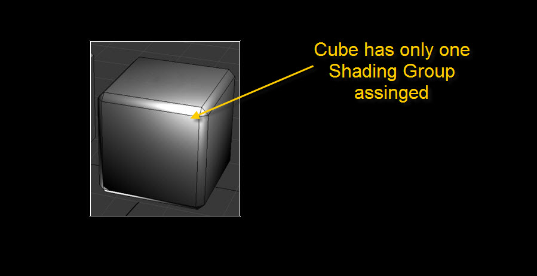
Чтобы плоские грани выглядели плоскими, нам нужно запустить скрипт, который вы можете иди сюда: GetVertNormalsFromFace_0_2.мс
Не забудьте назначить все одной группе сглаживания, прежде чем применять скрипт к объекту.
Для лучшей практики и упрощения лучше назначить скрипт ярлыку.
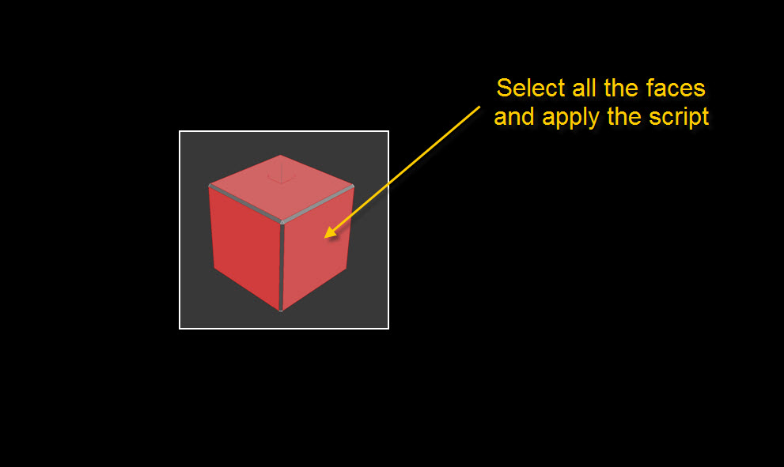
После применения скрипта получаем желаемый результат, углы у нас сглаженные, но грани плоские выглядят так.
Геометрия не изменилась, и карта нормалей не применена, но края выглядят круглыми и такими же, как у нас с примененной картой нормалей.
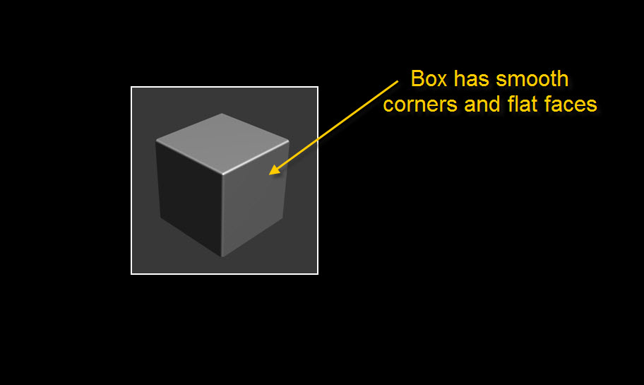
Чтобы лучше понять, что произошло, мы подготовили следующие изображения. Чтобы сделать наши нормали вершин видимыми, нам нужно применить «Редактировать нормаль» в 3DS Max.
На этом изображении так выглядели наши нормали после применения группы сглаживания. Произошло следующее: он взял все нормали вершин и усреднил их. В процессе мы получили сглаженные углы, но потеряли ровность прямых граней.
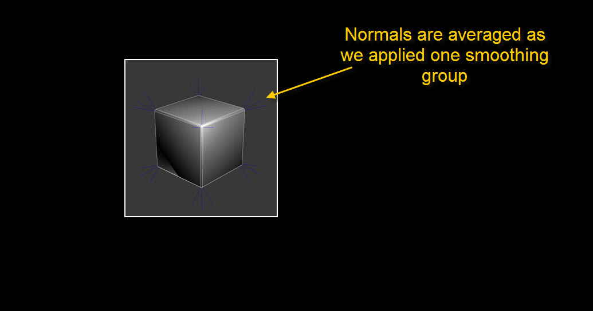
На втором изображении показано, как выглядят нормали вершин после того, как мы применили наш скрипт. Скрипт установил нормаль каждой вершины на 90 градусов.
Округлость углов теперь получается в результате интерполяции между нормалями обеих вершин.
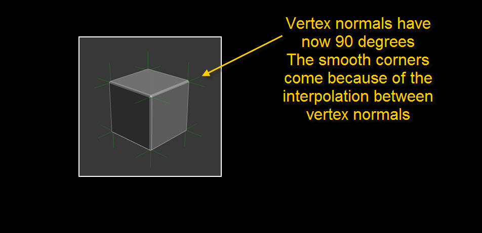
Вот изображение, которое делает его видимым.
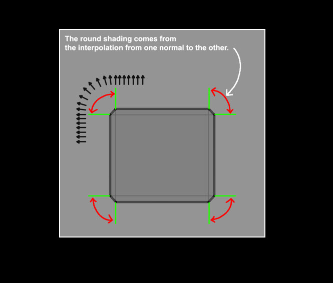
Если затенение вашего объекта выглядит нарушенным, возможно, что-то не так с нормалями. Чтобы это исправить, просто примените модификатор «Редактировать нормали», выберите все нормали и оставьте их в покое.
Чтобы экспортировать ресурс и добиться того, чтобы он выглядел точно так же при импорте в CRYENGINE, вам необходимо установить флажок «пользовательские нормали» в опциях CryExport.
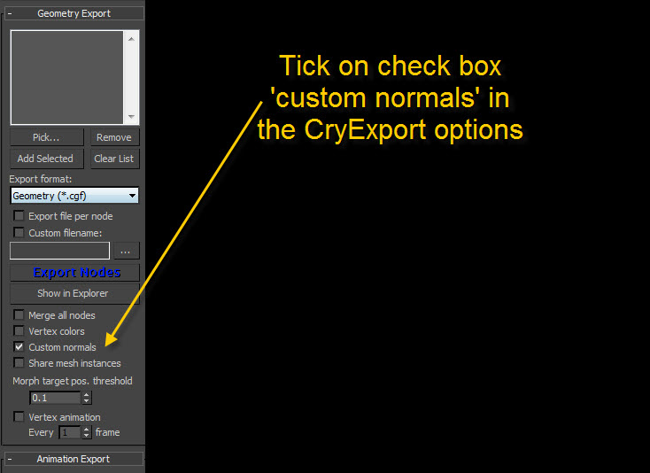
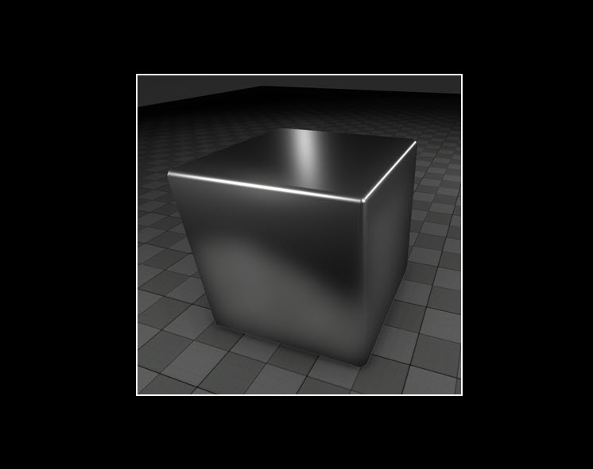
Однако есть некоторые плюсы и минусы, о которых следует знать:
- Плюсы: Вы сохраняете карту нормалей, вы можете избежать уникального отображения, это экономит время, меньше нормалей, сетка выглядит с более высоким разрешением.
- Минусы: Вы используете больше полигонов, нормали необходимо сбросить, а затем снова восстановить, если сетка изменится.
См. также
Урок. Подготовка нормалей геометрии для достижения оптимальных результатов в Xnormal